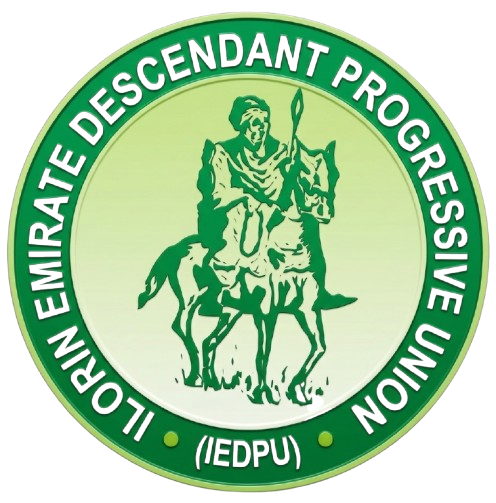

IEDPU NORTHERN ZONE
Waiting for internet
The portal could not reach the server. This public offline page is available on your device.
No member information or administrative records are stored here. No changes have been submitted.
Try the public homepage againReconnect to the internet and reload the page to continue.